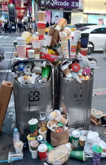
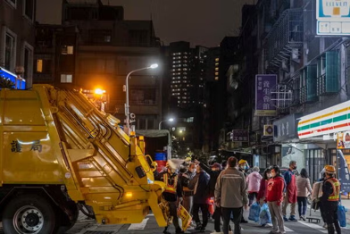
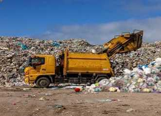
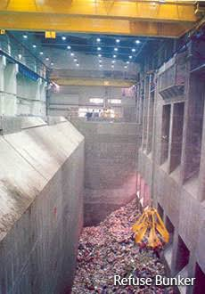

常看到人行道垃圾桶經常滿溢，不僅破壞了市容更會滋生病媒蒼蠅 蟑螂 老鼠等造成傳染病
黃色垃圾車於傍晚出巡，隨車播放《給愛麗絲》或《少女的祈禱》，
沿路收集等在路旁提著專用垃圾袋民眾手上的垃圾，這是台灣特有的家庭廢棄物清運文化
偶有新聞報導垃圾暫置場/焚化爐場各種發生的事件及衍生的問題
生活現況照片：




手指(滑鼠)輕放塑膠材料"中文名稱"上方可查看各種塑料特性說明，點選則可瀏覽其他相關網頁訊息。
認識七種常見塑膠材質後，來挑戰你的環保知識吧！
遊戲規則:
塑膠編號 1 號代表哪一種材質？